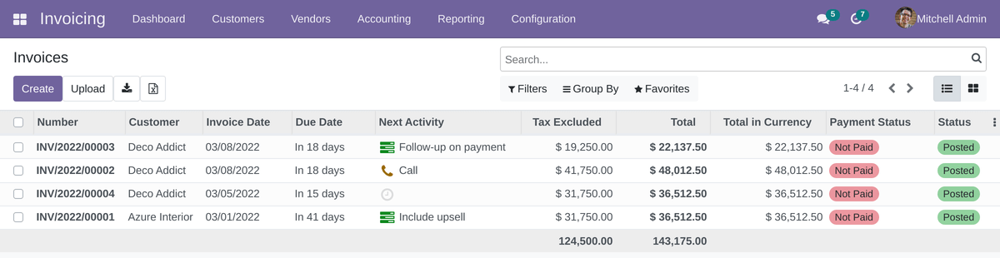
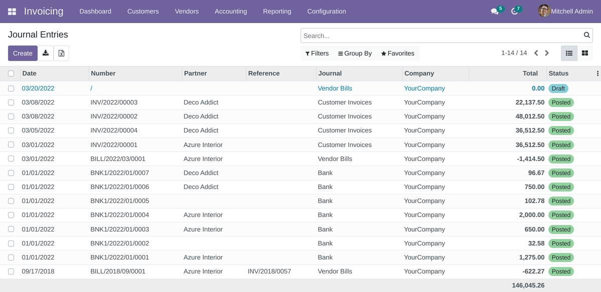
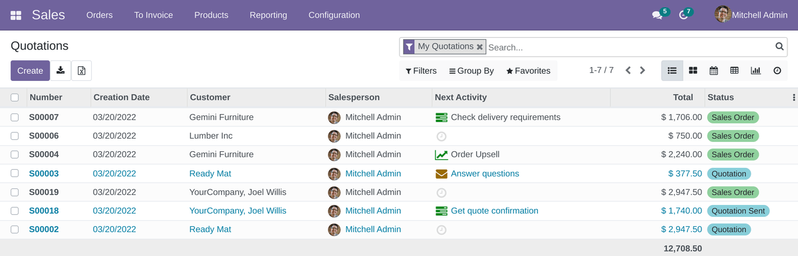
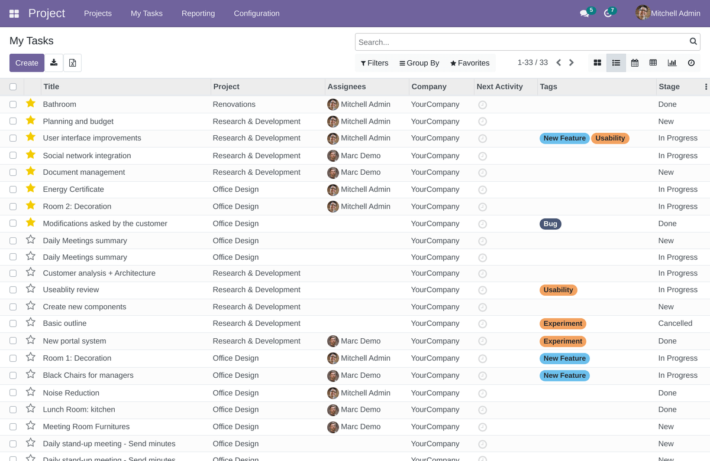
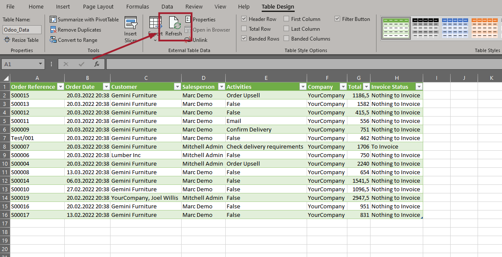
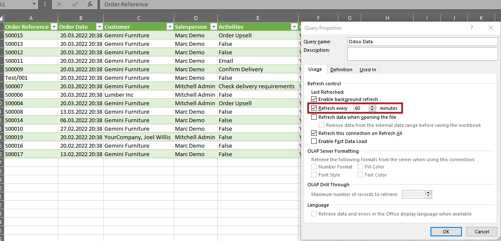
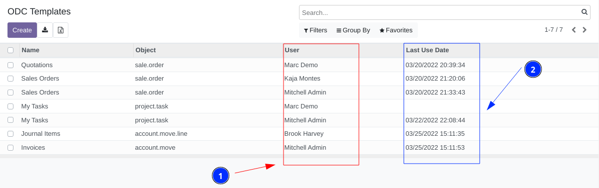

After installation of the module you will the special "excel" icon near the "export" button




The button is displayed in each list (tree) view and allow open ODC generation wizard.

ODC is office document connection format for Microsoft Excel and allow save power query rules as file.
When user open ODC file Excel gets external web data from Odoo server by specified algorithm and shows Odoo records as Excel spreadsheets.

After saving of XLSX file, user can update data using the "Refresh" button or configure to update data at a specified interval.
Excel will always update the spreadsheets according predefined rules and filters.

Administrator can see all ODC templates generated by users:
The list contains info about associated model, who created template and when records where pulled using this template.
Superuser can edit or remove any template. For example to clean templates of deactivated users or templates used long time ago.
